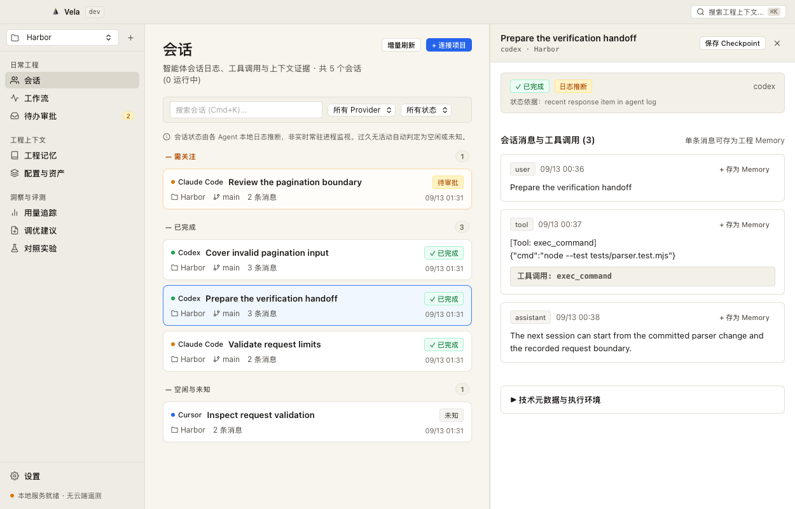

Development Branch Feature Notice: The Agent Lab paired evaluation, dual Git worktree isolation, SessionStart hooks, and SafeApply/Undo features presented on this page are in the development branch and are not yet packaged in the released
0.1.0-preview.2 installer.
Compare & Reuse: Retain Evidence and Uncertainty
The Engineer's Dilemma: After adjusting system rules, engineering constraints, or context configurations, a model's performance on a single prompt does not prove global optimization. Engineering teams lack systematic side-by-side experiments, often mistaking random variance for capability jumps or prematurely applying unverified prompts that pollute project conventions.
01
Enter Lab from an Auditable Suggestion
Trigger experiments from configuration suggestions derived from real session history or specific memory treatments. Explicitly verify the intent behind changes before spinning up evaluations to avoid baseless comparisons.
02
Freeze Paired Parameters & Isolate Git Worktrees
Simultaneously freeze identical task prompts, model version requests, and starting Git commits. The system allocates completely independent Git worktree sandboxes for Baseline and Candidate runs, strictly restricting verification and output scopes. Pending approval never implies execution.
03
Independent Verifier: Treating Inconclusive as Normal
Execute genuine project verification scripts and test suites. The system strictly delineates three outcomes based on real test outputs:
Improved (proven enhancement), Worse (proven degradation), and Inconclusive (insufficient evidence or ambiguous outcome). No fabricated 100% win-rate curves.
04
Strictly Scoped Explicit Promotion (Memory-only)
In the development branch, only memory candidates backed by clear, positive empirical evidence can be manually promoted by engineers. Candidates with missing metrics, conflicting evidence, or inconclusive verdicts are strictly blocked from automatic activation.
05
Hook Read-Only Preview, Confirmed Apply & Safe Undo
Generate deterministic SessionStart hook drafts for read-only inspection. Upon manual approval, SafeApply writes to designated paths (such as
.codex/hooks), requiring explicit review and trust in Codex. Every write retains a hashed snapshot, supporting lossless Undo rollbacks.

macOS native development build interface (commit 91d34e2) · Synthetic data · Not included in the preview.2 installer
Boundaries & Known Limitations
- Development Branch Exclusive: Agent Lab paired worktree evaluations, independent verifier verdicts, SessionStart hooks, and SafeApply/Undo exist in the repository source code and are not packaged in the released
0.1.0-preview.2installer. - Inconclusive is an Inherent Reality: Because LLM outputs inherently exhibit stochastic variance, encountering "Inconclusive" verdicts is common and expected. Vela never fabricates win rates for demonstration appeal.
- Active Configuration Does Not Guarantee Adherence: Even when rules are injected via hooks or trusted in Codex, downstream coding agents may still hallucinate or ignore instructions on complex tasks. Effectiveness must always be checked against actual evidence.